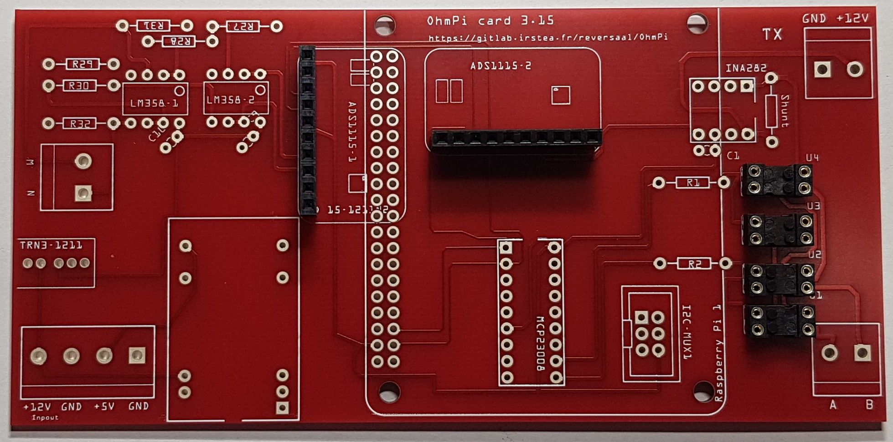
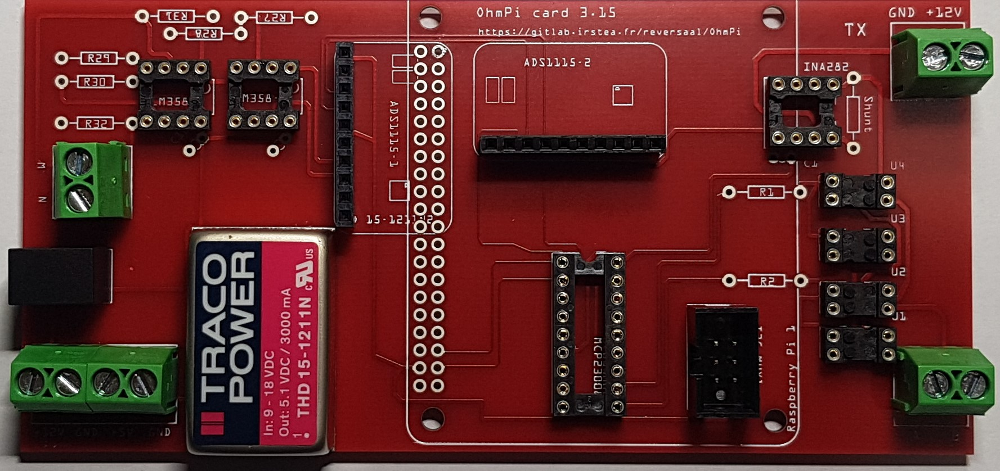
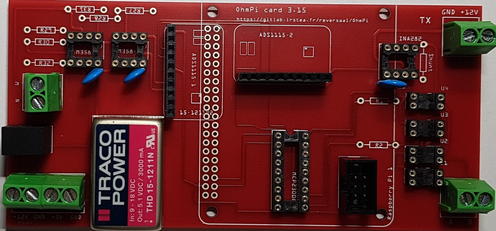
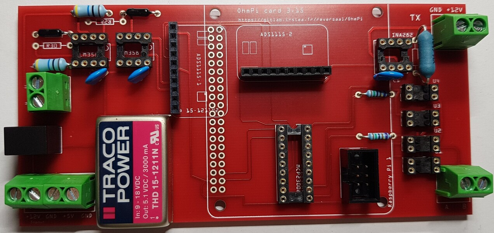
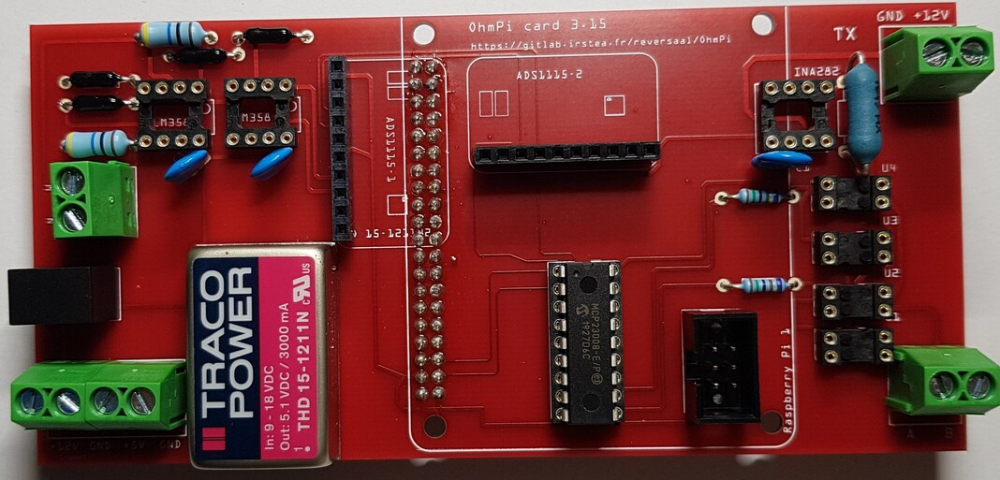
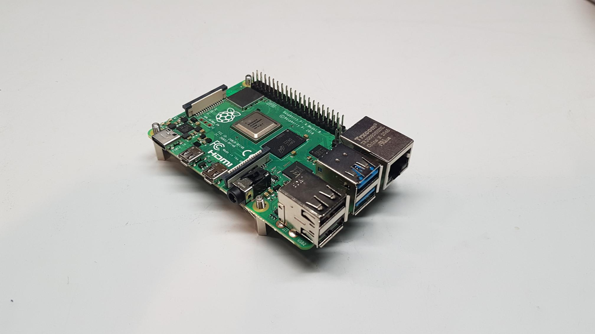
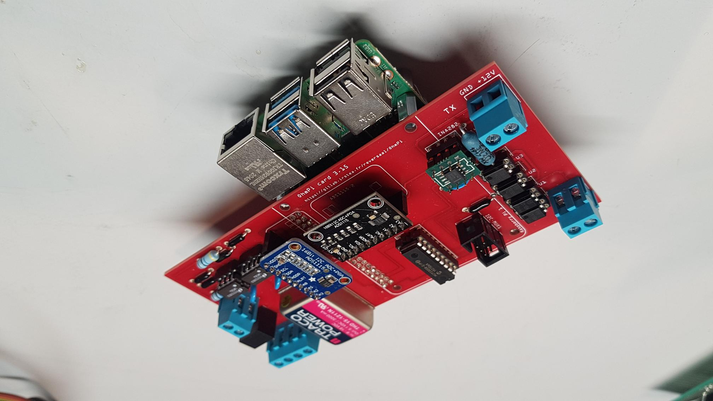
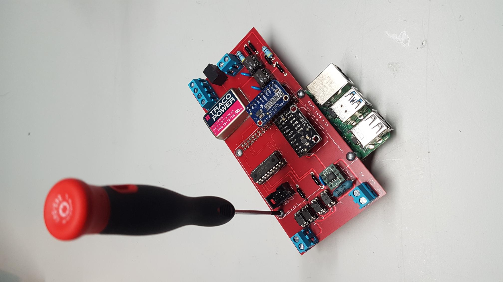
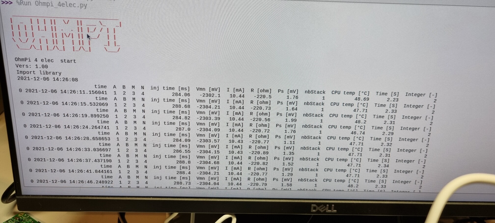

Warning
OhmPi is a participative project open to all, it requires skills in electronics and to respect the safety rules. OhmPi must be assembled in a professional context and by people competent in electronics. The OhmPi team cannot be held responsible for any material or human damage which would be associated with the use or the assembly of OHMPI. The OhmPi team cannot be held responsible if the equipment does not work after assembly.
Measurement board v2023
PART A Assembly of the measurement board
Required components

Component |
Number |
Cost per unit € |
Total cost € |
Manufacturer |
Manufacturer s reference |
Web reference |
|---|---|---|---|---|---|---|
Raspberry Pi 4 Model B |
1 |
58,75 |
58,75 |
Raspberry |
Raspberry Pi 4 Model B |
https://www.mouser.fr/ProductDetail/Seeed-Studio/102110421?qs=7MVldsJ5UaxeN3LYyh3sqw%3D%3D |
LM158N AMP-o |
2 |
14,5 |
58 |
Texas Instruments |
LM358AN/NOPB |
https://www.mouser.fr/ProductDetail/Texas-Instruments/LM158J?qs=X1J7HmVL2ZH8vpEfMl8%2FFQ%3D%3D |
Printed circuit board |
1 |
12 |
12 |
Asler |
||
ADS1115 |
2 |
11,9 |
23,8 |
Adafruit |
1085 |
|
Capacitor 100nF 50Vdc 10% Ceramic |
3 |
0,2 |
0,8 |
KEMET |
C320C104K1 |
https://www.mouser.fr/ProductDetail/KEMET/C320C104K1R5TA7303?qs=c4UyoTs%2FLq1th4mcyOeTmA%3D%3D |
Resistor 1 Kohm 0.5W +- 0.1% |
2 |
1,3 |
2,6 |
TE Connectivity |
H81K0BYA |
|
Resistor 1.5 Kohms +- 0.1% |
2 |
1,3 |
2,6 |
TE Connectivity |
H81K5BYA |
|
Resistor 1.5 Kohms +- 5% |
2 |
1,3 |
2,6 |
Vishay |
CCF071K50GKE36 |
https://www.mouser.fr/ProductDetail/Vishay-Dale/CCF071K50GKE36?qs=QKEOZdL6EQpA6LZRLQFVOw%3D%3D |
Resistor 10 Mohms +-5% |
2 |
0,762 |
1,524 |
VISHAY |
CMF651M0000FKEK143 |
https://www.mouser.fr/ProductDetail/Vishay-Dale/CMF651M0000FKEK143?qs=CiayqK2gdcKzIA2LEVaLkg%3D%3D |
2 ohm shunt resistor+- 1% |
1 |
2,42 |
2,42 |
Ohmite |
41F2R0E |
https://www.mouser.fr/ProductDetail/Ohmite/41F2R0E?qs=IM6ToxQzGOAuEDprb19mHA%3D%3D |
Dual screw terminal (5.08-mm pitch) |
5 |
0,648 |
3,24 |
CUI Devices |
TB009-508-02BE |
https://www.mouser.fr/ProductDetail/CUI-Devices/TB009-508-02BE?qs=vLWxofP3U2wCFk5uCkWTkA%3D%3D |
DC/DC converter 12 to 24V |
1 |
15,58 |
31,16 |
TracoPower |
TRN 3-1215 |
https://www.mouser.fr/ProductDetail/TRACO-Power/TRN-3-1215?qs=YCa%2FAAYMW02gqUicGQj0tA%3D%3D |
DIP Dual In Line Socket 2*4 |
3 |
0,72 |
2,16 |
Mill-Max |
110-43-308-41-001000 |
|
AQY211EH |
4 |
3,84 |
15,36 |
Panasonic Industrial Devices |
AQY211EH |
|
DIP Dual In Line Socket 2*2 |
4 |
0,449 |
1,796 |
Preci-dip |
110-83-304-41-001101 |
|
MCP23008 |
1 |
1,72 |
1,72 |
Adafruit |
593 |
https://www.mouser.fr/ProductDetail/Adafruit/593?qs=sGAEpiMZZMsKEdP9slC0YYV4kPdpMD1Hts4SLctIVmw%3D |
Header sets 1x10 |
2 |
2,12 |
4,24 |
Samtec |
SSW-110-02-G-S |
https://www.mouser.fr/ProductDetail/Samtec/SSW-110-02-G-S?qs=rU5fayqh%252BE0w1ORXZiBQpw%3D%3D |
SMT Breakout PCB for SOIC-8 |
1 |
2,5 |
2,5 |
Adafruit |
1212 |
|
INA282AID |
1 |
4,11 |
4,11 |
Texas Instruments |
INA282AID |
https://www.mouser.fr/ProductDetail/Texas-Instruments/INA282AID?qs=Ze4%2FuFuz19ILFayZXOCfrA%3D%3D |
THD 15-1211N |
1 |
39,72 |
39,72 |
TracoPower |
THD 15-1211N |
|
DIP Dual In Line Socket 2*20 |
1 |
8,53 |
8,53 |
Samtec |
SSQ-120-23-G-D |
https://www.mouser.fr/ProductDetail/Samtec/SSQ-120-23-G-D?qs=rU5fayqh%252BE1BMVd%252BDZONqg%3D%3D |
Pin strip no ejector |
1 |
0,35 |
0,35 |
BLK electronic |
10120550 |
|
Male Female spacer 2.5M HEXAGONALE |
4 |
0,87 |
3,48 |
HARWIN |
R25-3002002 |
https://www.mouser.fr/ProductDetail/Harwin/R25-3002002?qs=W0yvOO0ixfENUv0hsdC4%2FQ%3D%3D |
DIP Dual In Line Socket 2*9 |
1 |
1,86 |
1,86 |
Preci-dip |
437-1108331841001101 |
https://www.mouser.fr/ProductDetail/Preci-dip/110-83-318-41-001101?qs=FtMuP6KVi2TNQOezIAQ%2FPA%3D%3D |
Description

Figure shows the general schematics for the electronic measurement board developed. We have developed a complete “plug and play” measurement board. To measure electrical resistivity with Raspberry Pi. two ADS1115 were used,one for the voltage measurement one for the current measurement, as proposed by Florsch [7]. The ADS1115 is a 16-bit ADC (Analog-to-Digital Converter), with an adaptable gain. The advantage of ADS1115 is that the input signal value could lie between - to + 6.114 V. For the current measurement we have directly integrated the INA282 component, which allows to realize precise current measurement around a shunt resistor. The assembly are described in the following steps:
1 |

|
Installation of female header, 1 by 10 pins, for ADS1115 |
2 |
 |
Soldering of 4 dual-in-line socket (2 by 2 pins) for optical relay, AQY211EH. |
3 |

|
Soldering of 1 dual-in-line socket (2 by 9 pins) for MCP23008. |
4 |

|
Soldering of 1 dual-in-line socket (2 by 4 pins) |
5 |

|
Soldering of 2 dual-in-line socket (2 by 4 pins) |
6 |

|
Traco Power Supply 12V to 5V, TDH15 - 1211N |
7 |

|
Four screw terminals for 12V inpout et 5V output |
8 |

|
Traco power Supply 12V to 24V, TRN-1215 |
9 |

|
Two screw terminals electrodes M and N |
10 |
 |
Four screw terminals, for 12V power supply and for electrodes A and B |
11 |
 |
Soldering three capacitors (100nF) |
Warning
In this version, we used a shunt resistor of 2 ohms, which limits the current measurement to 48 mA. If the current is higher than this value, you just have to decrease the value of the shunt resistor. Don’t forget to change the shunt value in the config.py file (value associated to key ‘R_shunt’ in the OHMPI_CONFIG dict).
12 |

|
2 ohms shunt resistor pre-adjustment |
13 |

|
Soldering 2 ohms shunt resistor |
14 |

|
1 MOhm resistors |
15 |
|
Soldering tow 1 kOhm resistors |
16 |
 |
Soldering two 1.5 kOhm resistors |
17 |

|
Soldering two 1.5 kOhms resistors |
18 |

|
Female header 2 by 20 pins for Raspberry Pi connection |
19 |

|
View of the female header 2 by 20 pins installation for Raspberry Pi connection |
20 |
 |
Fixing MCP23008 component (Dot mark on the top left corner) |
21 |

|
Mounting optical relay, AQY211EH (Dot mark in the top left corners) |
22 |
|
Mounting LM158 operational amplifier |
23 |

|
Mounting ADS115 board |
24 |

|
Fixing the INA282 (Dot mark in the top right corner) |
PART B Start-up of the measurement board
Required components |
Component |
Number |
Cost per unit € |
Total cost € |
Manufacturer |
Manufacturer s reference |
Web reference |
|---|---|---|---|---|---|---|
Spacer 3x11 mm |
8 |
0.39 |
3.12 |
Wurth Elektronik |
971110321 |
https://www.mouser.fr/ProductDetail/Seeed-Studio/102110421?qs=7MVldsJ5UaxeN3LYyh3sqw%3D%3D |
Screw |
4 |
0.305 |
1.22 |
APM HEXSEAL |
RM3X8MM-2701 |
https://www.mouser.fr/ProductDetail/APM-HEXSEAL/RM3X8MM-2701?qs=JJSE%2F12mKnS3VxSDrYXUHw%3D%3D |
1 |
 |
Shutdown the raspberry Pi and unplug the power supply |
2 |
|
Mounting the bottom spacers on the Raspberry Pi (male/female, 11mm, M3) |
3 |

|
Mounting the upper spacers on the Raspberry Pi (female/female, 11mm, M3) |
4 |
 |
Mounting the OhmPi’s measurement board on the Raspberry Pi |
5 |
 |
Mounting the OhmPi’s measurement board on the Raspberry Pi |
6 |

|
Plug the power supply into a socket and connect it to your Raspberry Pi’s power port. |
PART C Check the measurement board
Run the terminal, and write
i2cdetect -y 1
1 |

|
If everything is working, three I2C addresses should appear on the screen. |
- Setting up an equivalent electronic circuit, for this you will need:
4 1kOhm resistor (R2)
1 220 Ohm resistor (R1)
1 small padboard
Spool of solder
2

Schematic of equivalent electronic circuit test
3 |

|
Prepare the equivalent electronic circuit test |
4 |

|
Prepare the battery connections and the terminals. |
5 |

|
Soldering cables and terminals |
6 |

|
Install the red cables on the +12V terminal and black cable on the ground terminal. Connect to two different 12V batteries |
7 |

|
Connect the equivalent electronic circuit test |
7 |

|
Run the Thonny Interpreter |
7 |
 |
Run sample_measurement_example.py example, if everything works you should get the following result (220 Ohm) |